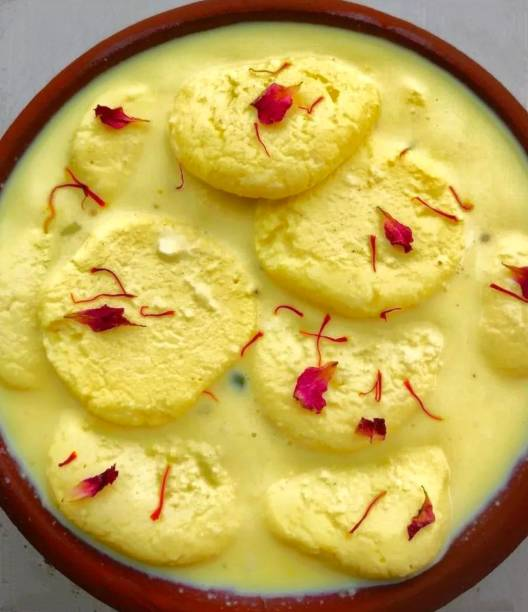

Ras Malai

Description
The word Ras means juice and Malai means cream. You put the two together and it invokes something far for poetic than it's literal English translation.
Rasmalai or Ras Malai, is a traditionally South Asian dessert where 'pedas' or little disc shaped mounds of a soft dough are cooked in milk in such a way that they cook through and absorb the flavour of the milk.
Ingredients:
For chenna
- 2 litre milk
- 2 tbsp vinegar
- 1½ cup sugar
- 3 pod cardamom
- 7 cup water
For rabdi:
- 1 litre milk
- few saffron
- pinch saffron food colour
- ½ cup sugar
- ¼ tsp cardamom powder
- 2 tbsp nuts, chopped
Steps:
- Start by making rasgullas, you can use store bough ones too.
- Take milk in a big pot and boil it till it is reduced by half. Once it has reduced, add in sugar and boil till it is little thick.
- Soak saffron in some warm milk for 5 mins, Fry some nuts in a tsp of ghee till golden.
- Now add in saffron milk, cardamom powder, fried nuts and raw pista. mix well.
- Add in rasgullas and simmer it for 5 mins.
- Once it is done. Transfer it to a bowl and chill it for 5 to 6 hours.
- Serve chilled with extra sprinkling of pista